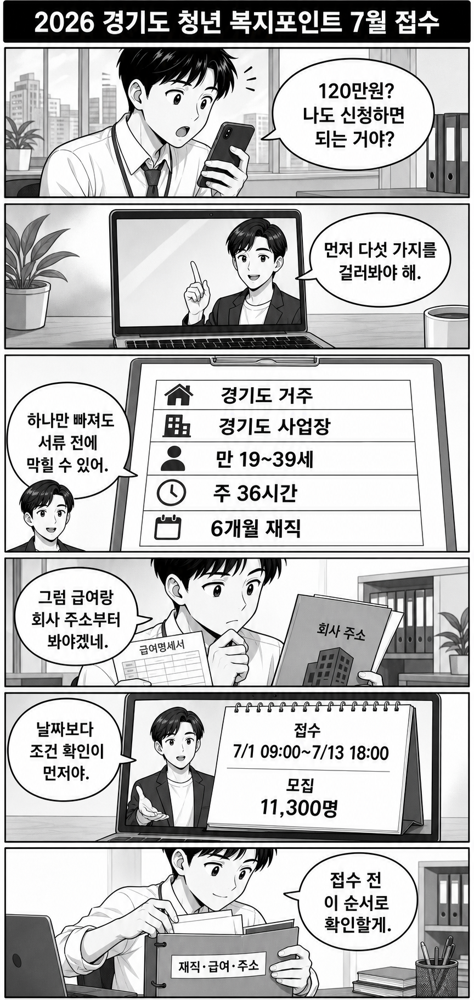

2026년 경기도 청년 복지포인트 모집 공고가 올라왔습니다. 접수는 2026년 7월 1일 09:00부터 7월 13일 18:00까지, 모집 인원은 11,300명으로 안내됐습니다.
먼저 볼 것은 금액이 아니라 내가 조건에서 걸리는지입니다. 경기도 거주, 경기도 소재 사업장, 만 19~39세, 주 36시간 이상, 동일 사업장 6개월 이상 재직, 월 급여 기준을 먼저 확인해야 합니다.

이번 공고의 큰 줄기는 간단합니다. 1년간 최대 120만원 상당 복지포인트를 지원하지만, 신청자는 먼저 근로 조건과 사업장 조건을 통과해야 합니다.
“청년이면 신청”으로 보면 헷갈립니다. 이 사업은 경기도에서 일하는 청년 노동자 지원사업에 가깝습니다.
여기서 하나라도 애매하면 신청 버튼보다 증빙 자료를 먼저 봐야 합니다. 특히 회사 주소, 고용 형태, 재직기간, 급여 기준은 본인이 기억하는 숫자와 서류상 숫자가 다를 수 있습니다.
집은 경기도인데 회사가 경기도 밖인 경우, 반대로 회사는 경기도인데 주민등록상 거주지가 다른 경우가 있습니다. 이럴 때는 “경기도 청년”이라는 말만 보고 판단하면 안 됩니다.
공고는 거주지와 사업장 소재지, 주 근무시간, 재직기간을 함께 봅니다. 또 국가·지자체·공공기관 등 일부 사업장은 제외될 수 있으니, 회사 종류도 확인해야 합니다.
접수 기간이 열리면 급하게 캡처하고 발급하다가 빠뜨리기 쉽습니다. 미리 아래 폴더 이름으로 나눠두면 확인이 편합니다.
공공 마이데이터 동의로 줄어드는 서류가 있을 수 있지만, 모든 자료가 자동으로 해결된다고 보면 위험합니다. 공고문에서 “제출 필요”와 “동의 시 생략 가능”을 나눠 봐야 합니다.
접수 전에는 신청 화면부터 찾기보다 조건을 먼저 지우는 편이 빠릅니다. 내가 경기도 거주자인지, 회사가 경기도 소재인지, 주 36시간과 6개월 재직을 증빙할 수 있는지, 월 급여 기준에 걸리지 않는지를 먼저 보세요.
이 글은 신청 대행이나 선정 보장이 아닙니다. 실제 제출서류, 제외대상, 선정 기준은 아래 공식 공고와 접수 화면을 기준으로 다시 확인해야 합니다.